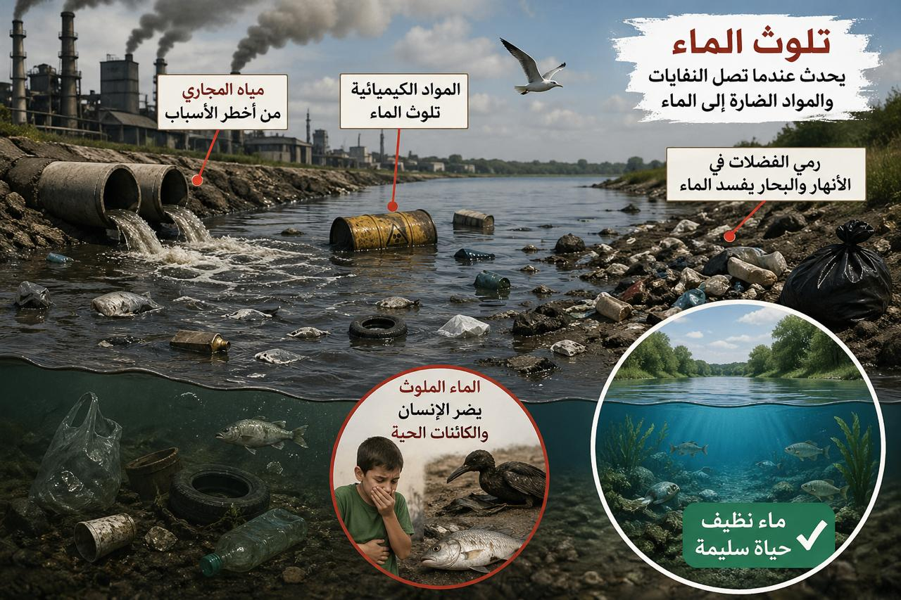

تعريف التنفس
التنفس عملية حيوية يحتاجها جسم الإنسان باستمرار.
- تعمل عملية التنفس على إدخال الأوكسجين إلى الجسم.
- تساعد على إخراج ثاني أكسيد الكربون إلى الخارج.
- يمكن للإنسان أن يبقى أيامًا دون طعام أو ماء، لكنه لا يبقى أكثر من خمس دقائق دون تنفس.
التنفس من أهم العمليات الحيوية في جسم الإنسان، فهو يساعدنا على إدخال الأوكسجين وإخراج ثاني أكسيد الكربون. ومن دون تنفس لا يستطيع الإنسان البقاء على قيد الحياة إلا دقائق قليلة.
التنفس عملية حيوية يحتاجها جسم الإنسان باستمرار.

الشهيق هو دخول الهواء إلى الرئتين.

الزفير هو خروج الهواء من الرئتين.
يرطب الهواء الداخل إلى الرئتين ويساعد على تنقيته.
تعد بوابة الجهاز التنفسي، وتمنع مرور الطعام إلى القصبة الهوائية.
تمرر الهواء من الخارج إلى الرئتين وبالعكس.
الرئة اليمنى والرئة اليسرى كيسان إسفنجيان يتم فيهما التبادل الغازي.
لا يكون التنفس بنفس السرعة طوال الوقت، بل يتغير حسب النشاط الذي يقوم به الإنسان.
تصبح عملية التنفس بطيئة جدًا أثناء النوم.
يتكون التنفس من طورين هما الشهيق والزفير، وتساعد أعضاء الجهاز التنفسي مثل الأنف والحنجرة والقصبة الهوائية والرئتين على إتمام هذه العملية. كما أن سرعة التنفس تتغير بحسب مقدار المجهود البدني الذي يقوم به الإنسان.